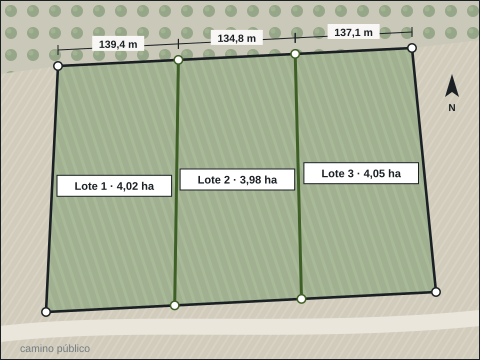

Segregar, dividir o repartir una finca.
Le preparamos la documentación técnica para que cada finca nueva nazca bien: con su licencia, en el Catastro y en el Registro, y sin sorpresas con la unidad mínima de cultivo.

Qué podemos hacer con su finca.
Segregación
Separar una parte para venderla, donarla o construir en ella.
División
Una finca en varias, por ejemplo entre hermanos.
Agrupación
Varias parcelas colindantes que pasan a ser una sola.
Partición de herencia
Lotes de valor equivalente, con su valoración.
Antes de dividir, se comprueba.
La mayoría de los problemas de una segregación se ven antes de empezar. Por eso lo primero es un estudio de la finca.
- Unidad mínima de cultivo. En suelo rústico, la división solo es válida si ninguna finca resultante queda por debajo de ella, salvo las excepciones de la legislación agraria, que en Extremadura necesitan autorización de la Junta.
- Planeamiento municipal. Parcela mínima, usos y la licencia de segregación del ayuntamiento.
- Superficie real. Medimos la finca: la del Catastro y la del Registro no siempre coinciden con la del terreno.
- Accesos, servidumbres y construcciones que quedan en cada parte.
La documentación que entregamos.
Para el ayuntamiento y la notaría
- Plano de la finca matriz y de las resultantes, acotado sobre el parcelario catastral.
- Memoria técnica para la licencia de segregación.
- Coordenadas de cada vértice en el sistema oficial.
Para el Catastro y el Registro
- Representación gráfica georreferenciada en formato GML.
- Informe de validación gráfica del Catastro, en positivo.
- Seguimiento hasta que el Catastro recoge las fincas nuevas.
Particiones: repartir sin dejar a nadie la peor parte.
Lotes de valor equivalente, no solo de superficie: el agua, el acceso y la calidad del suelo pesan.
- Valoración de la finca antes de dibujar los lotes.
- Fincas resultantes bien formadas, sin cuñas ni retales.
- Plano de cada lote con superficie, linderos y coordenadas.
Medida en campo, no copiada del plano.
Levantamos la finca con receptor GNSS y, si es grande o de difícil acceso, con nuestro dron con RTK.
Lo que nos preguntan.
¿Puedo segregar menos de la unidad mínima de cultivo?
Solo en los supuestos que prevé la legislación agraria y, en Extremadura, con autorización de la Junta. Lo comprobamos antes de empezar.
¿Qué superficie vale, la del Catastro o la del Registro?
La que se mide en el terreno. Si no coincide con ninguna, se corrige en el mismo trámite.
¿Necesito licencia del ayuntamiento?
Normalmente sí, o una declaración de que no hace falta. Depende del municipio y del tipo de suelo; se lo decimos al ver la finca.
¿Qué quiere hacer con su finca?
Con la referencia catastral y lo que quiere conseguir, le decimos si se puede, qué hace falta y en qué plazo.
- emiliocontadorbrito@gmail.com
- Calle Matilde Tagle Ortiz, 28, 5.º D, 06006 Badajoz